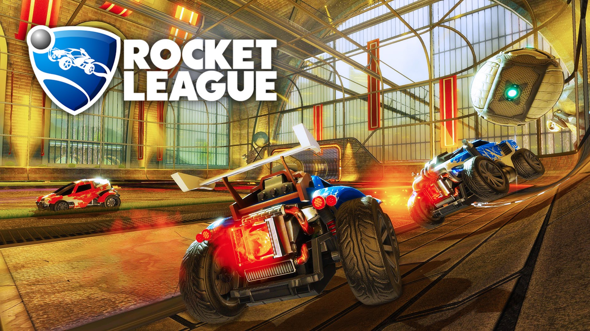

Rocket League |
|  |
AboutRocket League is a physics-based vehicle soccer video game developed and published by Psyonix, released digitally for Microsoft Windows and PlayStation 4 platforms on July 7, 2015. A version for Xbox One followed on February 17, 2016, while ports for OS Xand Linux are set to be released in 2016. A retail version for PlayStation 4 and Xbox One will be distributed by 505 Games in June 2016. Described as "soccer, but with rocket-powered cars", Rocket League has up to eight players assigned to one of two teams, using rocket-engine equipped vehicles to push a ball into their opponent's goal and score points over the course of a timed match. The game includes single-player and multiplayer modes which can be played both locally and online, including cross-platform playbetween the PlayStation 4 and Microsoft Windows versions as well as cross-play between Xbox One and Windows versions with the potential for other networks to be included in the future, The PC version of Rocket League features Cross-platform play with both the Sony PlayStation 4 and Microsoft Xbox One versions while the two consoles can't play with each other Cross-Platform yet. Later updates for the game enabled the ability to modify core rules and enabling new modes, such as gametypes based on ice hockey andbasketball. |